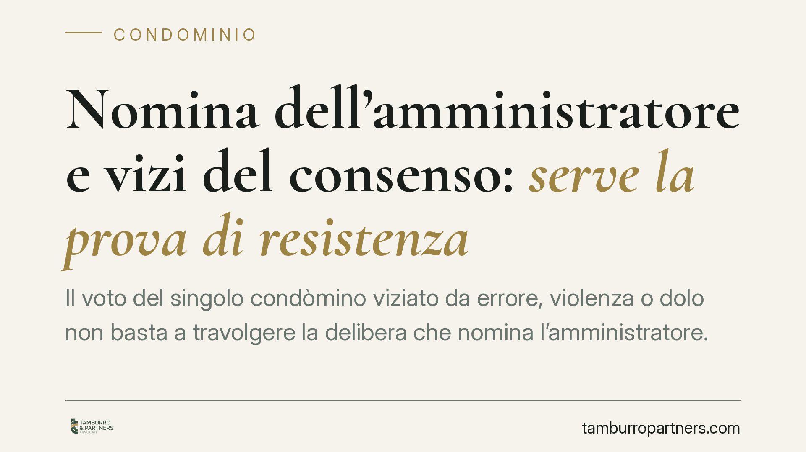

Nomina dell'amministratore e vizi del consenso: serve la prova di resistenza
Il voto del singolo condòmino viziato da errore, violenza o dolo non basta a travolgere la delibera che nomina l'amministratore. Occorre dimostrare che quei voti sono stati determinanti per raggiungere il quorum: è la cosiddetta prova di resistenza. Una pronuncia di merito torna sul punto, con ricadute concrete per chi impugna.

Il caso
Un gruppo di condòmini impugna la delibera assembleare che ha nominato l'amministratore, sostenendo che il consenso di alcuni votanti fosse viziato. La questione è se un vizio che colpisce la volontà del singolo votante sia di per sé sufficiente a far cadere l'intera decisione collegiale.
Secondo un orientamento ribadito di recente dalla giurisprudenza di merito — tra cui una pronuncia del Tribunale di Pesaro (gli estremi vanno verificati presso la fonte diretta, trattandosi di dato non confermabile in modo autonomo) — la risposta è negativa: non basta allegare il vizio, bisogna superare la prova di resistenza.
Inquadramento normativo
I vizi del consenso sono disciplinati dal Codice civile in materia di contratti e si distinguono in tre figure:
- errore (artt. 1427-1431 c.c.): la falsa rappresentazione della realtà che determina la volontà;
- violenza (artt. 1434-1437 c.c.): la minaccia che costringe a manifestare una volontà non libera. L'art. 1435 c.c., in particolare, definisce i requisiti della violenza rilevante;
- dolo (artt. 1439-1440 c.c.): il raggiro che induce in errore.
Queste categorie, nate per il contratto, vengono trasposte al voto assembleare, che è manifestazione di volontà del singolo condòmino. Il voto confluisce però in un atto collegiale: la delibera. Da qui la necessità di distinguere il piano del singolo da quello dell'assemblea.
Sul versante processuale resta fermo il termine di trenta giorni previsto dall'art. 1137 c.c. per impugnare le delibere annullabili. Il termine decorre dalla delibera per i presenti e dalla comunicazione del verbale per gli assenti.
Quanto alla figura dell'amministratore, l'art. 1129 c.c. ne impone la nomina quando i condòmini sono più di otto.
La prova di resistenza
La prova di resistenza è il meccanismo logico con cui si verifica se, eliminati i voti viziati, la delibera avrebbe comunque raggiunto le maggioranze richieste. Se il quorum regge anche senza quei voti, la decisione resiste e non è annullabile. Se invece i voti viziati sono stati determinanti — cioè senza di essi la maggioranza non si sarebbe formata — la delibera è travolta.
È un principio di economia: non si annulla un atto che sarebbe stato adottato comunque. Chi impugna, quindi, non può limitarsi a lamentare il vizio del proprio consenso o di quello altrui; deve farsi carico di dimostrarne l'incidenza sul risultato finale.
Vizio del singolo o vizio del procedimento
È essenziale non confondere due patologie diverse.
Un conto è il vizio del consenso del singolo votante (errore, violenza, dolo): qui opera la prova di resistenza, perché il difetto tocca una sola manifestazione di volontà all'interno del collegio.
Altro conto è il vizio del procedimento assembleare: convocazione omessa, difetto di informazione, violazione delle regole di costituzione o di maggioranza. In questi casi il difetto investe la formazione stessa della delibera e segue regole proprie, spesso più severe, perché incide sulla legittimità dell'intero atto e non sul solo voto del singolo.
Implicazioni pratiche
Per il condòmino dissenziente che intende impugnare, la pronuncia conferma un onere probatorio preciso. Non è sufficiente denunciare un consenso viziato: va ricostruito l'esito della votazione e dimostrato che quei voti hanno fatto la differenza.
Per l'amministratore nominato e per l'assemblea, il principio offre un margine di stabilità: la delibera adottata con ampio margine difficilmente cade per il vizio del voto di pochi.
Cosa fare in concreto
- Ricostruisci la votazione: raccogli il verbale e verifica quorum costitutivo e deliberativo, millesimi e teste.
- Isola i voti contestati: individua con precisione quali manifestazioni di volontà sarebbero viziate e per quale causa (errore, violenza o dolo).
- Applica la prova di resistenza: calcola se, sottratti quei voti, la maggioranza regge comunque.
- Verifica il termine: controlla la data della delibera o della comunicazione del verbale, perché l'impugnazione va proposta entro trenta giorni (art. 1137 c.c.).
- Distingui il tipo di vizio: valuta se il problema riguardi il singolo voto o il procedimento assembleare, perché la disciplina cambia.
È opportuno, prima di agire, un esame preliminare dell'esito della votazione e della documentazione assembleare.
---
*Contributo informativo a cura di Tamburro & Partners - Avv. Giuseppe Tamburro. Non costituisce parere legale.*
Ogni condominio ha una storia a sé.
Se gestisci un'amministrazione e vuoi un confronto su una specifica questione condominiale, scrivi allo studio. Ti rispondiamo entro un giorno lavorativo.